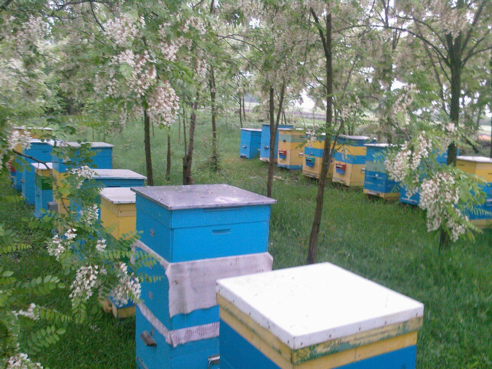

Акація — наш перший головний медонос. Вона цвіте на початку літа, зовсім недовго, і саме з неї починається сезон відкачки. Потім іде різнотрав'я, а в серпні — соняшник.

Акацієвий мед світлий, ніжний на смак і довго лишається рідким, довше за більшість інших сортів. Але кожен рік він трохи інший: все залежить від погоди під час цвітіння, а акація цвіте лічені дні.
У щільно закритій скляній банці, у прохолодному темному місці. Не гріти сильно: від перегріву мед втрачає аромат.